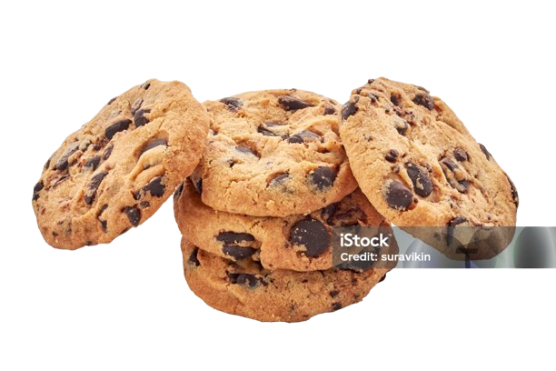

Maryland Cookies
The chocolate chips in Maryland cookies are found out to be made from "bake stable chocolate". This type of chocolate will not melt to the point that it creates a gooey texture.Maryland cookies were first produced by Lyons in 1956 through its Blackpool subsidiary Symbol Biscuits.
